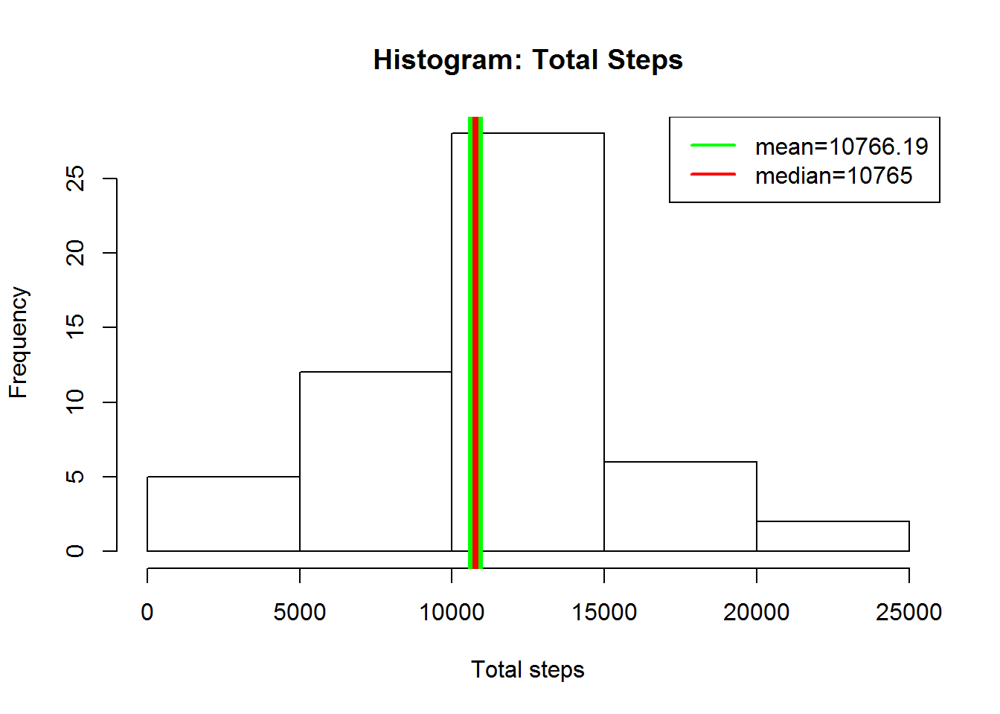
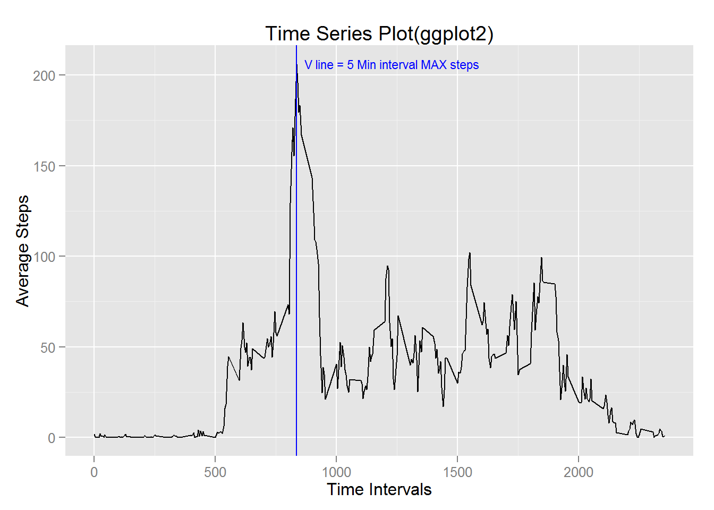
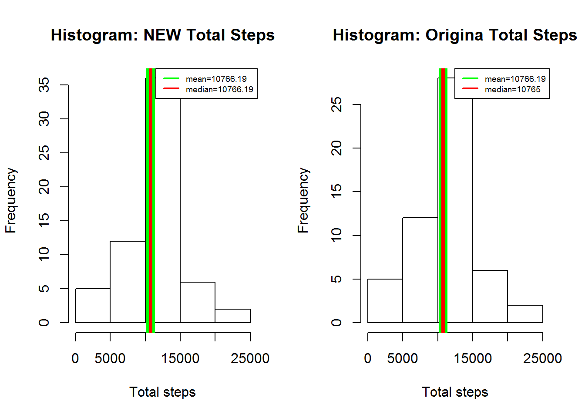
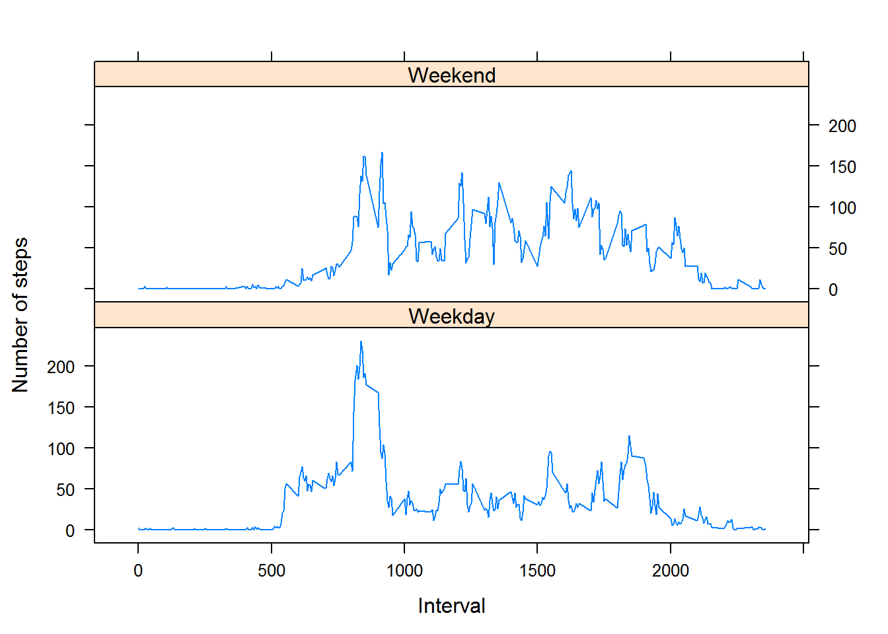

data <- read.csv('activity.csv')
data <- na.omit(data)
data$date <- as.Date(data$date)
head(data)## steps date interval
## 289 0 2012-10-02 0
## 290 0 2012-10-02 5
## 291 0 2012-10-02 10
## 292 0 2012-10-02 15
## 293 0 2012-10-02 20
## 294 0 2012-10-02 25library(dplyr)gbDate <- group_by(data, date)
totalSteps <- summarise(gbDate, total_steps=sum(steps))
as.data.frame(totalSteps)## date total_steps
## 1 2012-10-02 126
## 2 2012-10-03 11352
## 3 2012-10-04 12116
## 4 2012-10-05 13294
## 5 2012-10-06 15420
## 6 2012-10-07 11015
## 7 2012-10-09 12811
## 8 2012-10-10 9900
## 9 2012-10-11 10304
## 10 2012-10-12 17382
## 11 2012-10-13 12426
## 12 2012-10-14 15098
## 13 2012-10-15 10139
## 14 2012-10-16 15084
## 15 2012-10-17 13452
## 16 2012-10-18 10056
## 17 2012-10-19 11829
## 18 2012-10-20 10395
## 19 2012-10-21 8821
## 20 2012-10-22 13460
## 21 2012-10-23 8918
## 22 2012-10-24 8355
## 23 2012-10-25 2492
## 24 2012-10-26 6778
## 25 2012-10-27 10119
## 26 2012-10-28 11458
## 27 2012-10-29 5018
## 28 2012-10-30 9819
## 29 2012-10-31 15414
## 30 2012-11-02 10600
## 31 2012-11-03 10571
## 32 2012-11-05 10439
## 33 2012-11-06 8334
## 34 2012-11-07 12883
## 35 2012-11-08 3219
## 36 2012-11-11 12608
## 37 2012-11-12 10765
## 38 2012-11-13 7336
## 39 2012-11-15 41
## 40 2012-11-16 5441
## 41 2012-11-17 14339
## 42 2012-11-18 15110
## 43 2012-11-19 8841
## 44 2012-11-20 4472
## 45 2012-11-21 12787
## 46 2012-11-22 20427
## 47 2012-11-23 21194
## 48 2012-11-24 14478
## 49 2012-11-25 11834
## 50 2012-11-26 11162
## 51 2012-11-27 13646
## 52 2012-11-28 10183
## 53 2012-11-29 7047hist(totalSteps$total_steps, xlab = "Total steps", main ="Histogram: Total Steps")
abline(v = mean(totalSteps$total_steps), col = "green", lwd = 10)
abline(v = median(totalSteps$total_steps), col = "red", lwd = 4)
legend("topright", c("mean=10766.19", "median=10765"), col=c("green", "red"), lty =c(1,1), lwd=2)
##mean
mean(totalSteps$total_steps)## [1] 10766.19##median
median(totalSteps$total_steps)## [1] 10765library(ggplot2)## Warning: package 'ggplot2' was built under R version 3.2.2gbInterval <- group_by(data, interval)
totalStepsInterval <- summarize(gbInterval, average_steps = mean(steps))
intervalMaxSteps <- filter(totalStepsInterval, average_steps == max(totalStepsInterval$average_steps))$interval
maxSteps <- filter(totalStepsInterval, average_steps == max(totalStepsInterval$average_steps))$average_steps
ggplot(totalStepsInterval, aes(interval, average_steps)) + geom_line() + geom_vline(xintercept=intervalMaxSteps, color="blue") + annotate("text", x = 1230, y = 206.1698, label = "V line = 5 Min interval MAX steps", color = "blue", size = 3) + ylab("Average Steps") + xlab("Time Intervals") + labs(title ="Time Series Plot(ggplot2)")
##Interval containing maximum number of steps
intervalMaxSteps <- filter(totalStepsInterval, average_steps == max(totalStepsInterval$average_steps))$interval
intervalMaxSteps## [1] 835##Max number of steps
maxSteps <- filter(totalStepsInterval, average_steps == max(totalStepsInterval$average_steps))$average_steps
maxSteps## [1] 206.1698dataNA <- read.csv("activity.csv")
summary(dataNA)## steps date interval
## Min. : 0.00 2012-10-01: 288 Min. : 0.0
## 1st Qu.: 0.00 2012-10-02: 288 1st Qu.: 588.8
## Median : 0.00 2012-10-03: 288 Median :1177.5
## Mean : 37.38 2012-10-04: 288 Mean :1177.5
## 3rd Qu.: 12.00 2012-10-05: 288 3rd Qu.:1766.2
## Max. :806.00 2012-10-06: 288 Max. :2355.0
## NA's :2304 (Other) :15840## there are total of 2304 NA's# Setting up data: 1.) reading 2.) changing na to x 3.) arranging data by date
testOriginal <- read.csv('activity.csv')
testOriginal$date <- as.Date(testOriginal$date)
testOriginal[is.na(testOriginal)] <- "x"
testOriginal <- arrange(testOriginal, date)
# Splitting DF into 2 DFs. noNA only contains data without NA
noNA <- filter(testOriginal, steps != "x")
noNA$steps <- as.numeric(noNA$steps)
# allNA contains only NA
allNA <- filter(testOriginal, steps == "x")
# Getting mean of steps in each unique interval
meanInterval <- summarize(group_by(noNA, interval), average_steps=mean(steps))
# Combining average steps with allNA DF
newCol <- cbind(meanInterval$average_steps, allNA)
# cleaning revised allNA
newCol <- select(newCol, -steps)
colnames(newCol)[1] <- "steps"
# combining the 2 DF that was split making new DF with
newDF <- arrange(rbind(newCol, noNA), date)print(newDF[1:10,])## steps date interval
## 1 1.7169811 2012-10-01 0
## 2 0.3396226 2012-10-01 5
## 3 0.1320755 2012-10-01 10
## 4 0.1509434 2012-10-01 15
## 5 0.0754717 2012-10-01 20
## 6 2.0943396 2012-10-01 25
## 7 0.5283019 2012-10-01 30
## 8 0.8679245 2012-10-01 35
## 9 0.0000000 2012-10-01 40
## 10 1.4716981 2012-10-01 45summary(newDF)## steps date interval
## Min. : 0.00 Min. :2012-10-01 Min. : 0.0
## 1st Qu.: 0.00 1st Qu.:2012-10-16 1st Qu.: 588.8
## Median : 0.00 Median :2012-10-31 Median :1177.5
## Mean : 37.38 Mean :2012-10-31 Mean :1177.5
## 3rd Qu.: 27.00 3rd Qu.:2012-11-15 3rd Qu.:1766.2
## Max. :806.00 Max. :2012-11-30 Max. :2355.0NDtotalSteps <- summarize(group_by(newDF, date), total_steps = sum(steps))
as.data.frame(NDtotalSteps)## date total_steps
## 1 2012-10-01 10766.19
## 2 2012-10-02 126.00
## 3 2012-10-03 11352.00
## 4 2012-10-04 12116.00
## 5 2012-10-05 13294.00
## 6 2012-10-06 15420.00
## 7 2012-10-07 11015.00
## 8 2012-10-08 10766.19
## 9 2012-10-09 12811.00
## 10 2012-10-10 9900.00
## 11 2012-10-11 10304.00
## 12 2012-10-12 17382.00
## 13 2012-10-13 12426.00
## 14 2012-10-14 15098.00
## 15 2012-10-15 10139.00
## 16 2012-10-16 15084.00
## 17 2012-10-17 13452.00
## 18 2012-10-18 10056.00
## 19 2012-10-19 11829.00
## 20 2012-10-20 10395.00
## 21 2012-10-21 8821.00
## 22 2012-10-22 13460.00
## 23 2012-10-23 8918.00
## 24 2012-10-24 8355.00
## 25 2012-10-25 2492.00
## 26 2012-10-26 6778.00
## 27 2012-10-27 10119.00
## 28 2012-10-28 11458.00
## 29 2012-10-29 5018.00
## 30 2012-10-30 9819.00
## 31 2012-10-31 15414.00
## 32 2012-11-01 10766.19
## 33 2012-11-02 10600.00
## 34 2012-11-03 10571.00
## 35 2012-11-04 10766.19
## 36 2012-11-05 10439.00
## 37 2012-11-06 8334.00
## 38 2012-11-07 12883.00
## 39 2012-11-08 3219.00
## 40 2012-11-09 10766.19
## 41 2012-11-10 10766.19
## 42 2012-11-11 12608.00
## 43 2012-11-12 10765.00
## 44 2012-11-13 7336.00
## 45 2012-11-14 10766.19
## 46 2012-11-15 41.00
## 47 2012-11-16 5441.00
## 48 2012-11-17 14339.00
## 49 2012-11-18 15110.00
## 50 2012-11-19 8841.00
## 51 2012-11-20 4472.00
## 52 2012-11-21 12787.00
## 53 2012-11-22 20427.00
## 54 2012-11-23 21194.00
## 55 2012-11-24 14478.00
## 56 2012-11-25 11834.00
## 57 2012-11-26 11162.00
## 58 2012-11-27 13646.00
## 59 2012-11-28 10183.00
## 60 2012-11-29 7047.00
## 61 2012-11-30 10766.19par(mfcol = c(1,2))
# new hist
hist(NDtotalSteps$total_steps, xlab = "Total steps", main ="Histogram: NEW Total Steps")
abline(v = mean(NDtotalSteps$total_steps), col = "green", lwd = 10)
abline(v = median(NDtotalSteps$total_steps), col = "red", lwd = 4)
legend("topright", c("mean=10766.19", "median=10766.19"), col=c("green", "red"), lty =c(1,1), lwd=2, cex=.6)
# Original hist
hist(totalSteps$total_steps, xlab = "Total steps", main ="Histogram: Origina Total Steps")
abline(v = mean(totalSteps$total_steps), col = "green", lwd = 10)
abline(v = median(totalSteps$total_steps), col = "red", lwd = 4)
legend("topright", c("mean=10766.19", "median=10765"), col=c("green", "red"), lty =c(1,1), lwd=2, cex = .60)
# Mean of total steps.
mean(NDtotalSteps$total_steps)## [1] 10766.19# Median of total steps.
median(NDtotalSteps$total_steps)## [1] 10766.19length(NDtotalSteps$total_steps)## [1] 61length(totalSteps$total_steps)## [1] 53## Adding day to newDF
addDay <- data.frame(steps=newDF$steps, date=newDF$date, day=weekdays(newDF$date), interval=newDF$interval)
addDay$day <- as.character(addDay$day)
weekday <- c("Monday","Tuesday","Wednesday","Thursday","Friday")
weekend <- c("Saturday", "Sunday")
onlyWeekend <- filter(addDay, day == "Sunday" | day == "Saturday")
onlyWeekday <- filter(addDay, day == "Monday" | day == "Tuesday" | day == "Wednesday" | day =="Thursday"|day =="Friday")
averageStepsWeekend <- summarize(group_by(onlyWeekend, interval), average_steps=mean(steps))
averageStepsWeekend$Day <- "Weekend"
averageStepsWeekday <- summarize(group_by(onlyWeekday, interval), average_steps=mean(steps))
averageStepsWeekday$Day <- "Weekday"
averageDay <- rbind(averageStepsWeekend, averageStepsWeekday)
library(lattice)
xyplot(average_steps~interval|Day, data = averageDay, layout=c(1,2), type="l", ylab="Number of steps", xlab="Interval")